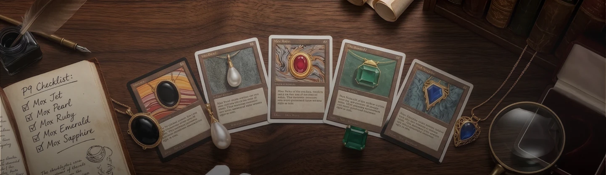
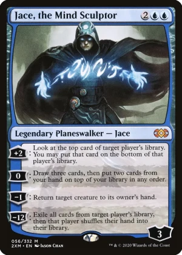
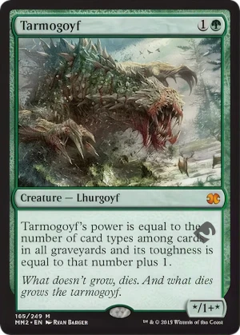

Carte Famose
Le Carte che hanno fatto la Storia
In oltre trent'anni di vita, Magic: The Gathering ha prodotto migliaia di carte, ma solo alcune hanno raggiunto uno status leggendario. Che si tratti di potenza devastante, rarità estrema o valore economico da record, queste carte rappresentano il meglio — e talvolta il "troppo" — che il gioco abbia mai offerto. Ecco le più iconiche.
Black Lotus
La carta più famosa e costosa nella storia di Magic. Stampata solo nei set Alpha, Beta e Unlimited del 1993, il Black Lotus permette di aggiungere tre mana di qualsiasi colore sacrificandolo, il tutto a costo zero. Questa capacità di accelerare enormemente il gioco fin dal primo turno la rese immediatamente dominante e portò al suo ban in tutti i formati eccetto il Vintage, dove è comunque limitata a una sola copia. Un esemplare Alpha in condizioni perfette è stato venduto all'asta per oltre 500.000 dollari.

Le Power Nine
Il Black Lotus fa parte di un gruppo d'élite conosciuto come le "Power Nine": le nove carte più potenti mai stampate nell'Alpha. Oltre al Lotus, il gruppo include Ancestral Recall (pescare tre carte per un solo mana blu), Time Walk (un turno extra per due mana), i cinque Mox (artefatti a costo zero che producono mana) e il Timetwister. Queste carte sono bandite ovunque tranne che in Vintage e rappresentano il Santo Graal per ogni collezionista.

L'Unico Anello (The One Ring)
Nel 2023, l'espansione "Il Signore degli Anelli: Racconti della Terra di Mezzo" ha introdotto una carta unica al mondo: The One Ring in versione serializzata 001/001, stampata in un solo esemplare a livello globale e nascosta casualmente all'interno di una bustina Collector Booster. La carta è stata trovata da Brook Trafton e successivamente acquistata dal celebre rapper Post Malone per ben 2 milioni di dollari, rendendola la singola carta di Magic più costosa mai venduta. Gradata PSA 9, è oggi conservata come un vero e proprio pezzo da museo.

Jace, the Mind Sculptor
Pubblicato nel 2010 con l'espansione Worldwake, Jace, the Mind Sculptor è considerato il Planeswalker più forte mai stampato. Con quattro abilità straordinarie — tra cui la possibilità di far pescare, controllare il top-deck avversario o addirittura esiliare l'intera libreria del rivale — Jace dominò il formato Standard al punto da venire bannato, un evento rarissimo per un Planeswalker. Ancora oggi è giocabile in Legacy e Vintage, dove resta una presenza temuta.

Tarmogoyf
Questo specifico Tarmogoyf è il protagonista del celebre "Goyfgate". Durante la Top 8 del Grand Prix Las Vegas 2015, il pro player Pascal Maynard scelse di draftare questa carta foil per il suo puro valore economico (circa 300$) anziché prendere una carta fondamentale per vincere il torneo. La scelta spaccò la community tra aspre critiche e difese. Maynard mise poi la carta all'asta per beneficenza, vendendola per l'incredibile cifra di 14.900 dollari e rendendola un pezzo di storia.

Il Fascino delle Carte Leggendarie
Queste carte non sono solo strumenti di gioco: sono pezzi di storia, opere d'arte e oggetti da collezione che racchiudono l'essenza stessa di Magic. Ogni carta famosa porta con sé il ricordo di un'epoca, di un metagame e delle emozioni di milioni di giocatori. Il collezionismo di carte rare è oggi un mercato fiorente, con esemplari graded che raggiungono quotazioni da capogiro nelle aste internazionali.